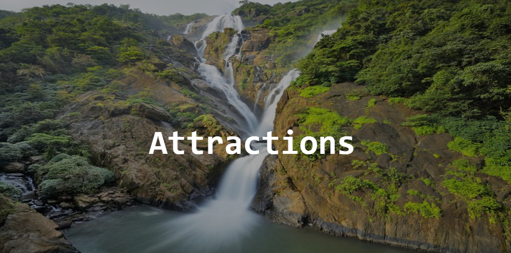

Adventour

Dudhsagar Falls
Plunging down a height of 300 m, this waterfall is one of the most spectacular sights in Goa, especially
during the monsoon months. Its name implies a sea of milk in Konkani, owing, it is believed, to how the
water looks as it cascades down an almost vertical cliff face - rich, white and foamy like pure milk. One of
the most glorious waterfalls in the country, Dudhsagar Falls is set in the midst of spectacular scenery and
overlooks a valley covered by the tropical forest of Bhagwan Mahavir Sanctuary and Molem National Park in
the Western Ghats. You can reach the falls via trekking through picturesque surroundings.
Bhagwan Mahavir Wildlife Sanctuary
Nestled at the foothills of the Western Ghats, this sanctuary is spread across an
area of 240 sq km and is
the largest of Goa's wildlife reserves. You can spot tiger, leopard, jungle cat, toddy cat, jackal, giant
squirrel, bonnet macaque, sloth bear, hyena, sambar, spotted deer, hog, mouse deer, barking deer,
ruby-throated yellow bulbul, Malabar pied hornbill, Malabar trogan, crested serpent eagle, crested honey
buzzard, white-rumped spine tail, ashy wood swallow, black-crested bulbul, forest wagtail, scarlet minivet,
chestnut-bellied nuthatch, velvet-fronted nuthatch and sulphur-bellied warbler.
The reptiles found at the park include bronze-back tree snake, cat snake, hump-nosed pit viper, Indian rock
python, Malabar pit viper, rat snake, Russell's viper, Indian cobra and common krait. The most famous
reptilian inhabitant of the park, however, is king cobra.
The best way to explore the park is by hiking through it and one can choose from a number of treks and hikes
conducted by knowledgeable guides. There is also an Interpretation Centre, which has an invaluable amount of
collectibles and data from the park.
Aguada Fort
Built to defend and protect Old Goa from potential invasions, Fort Aguada is the
largest and the best-preserved Portuguese bastion in the state. It was built sometime between 1609 and 1612
to guard against the Marathas and the Dutch forces that wanted to establish their reign. Its strategic
location limited the entry into River Mandovi and also to protected Old Goa from enemy attacks. Among the
most fascinating highlights of the fort is a large cistern that could store over 20,00,000 gallons of water
and a magnificent citadel.
A four-storey lighthouse, built in 1864, sits prettily on the premises, and is believed to be the oldest of
its kind in Asia. During the initial days, the lighthouse emitted light once every seven minutes that was
reduced to every 30 seconds in 1834. The lighthouse was ultimately abandoned in 1976. The fort has been
named after a freshwater spring located inside it that once provided water to arriving ships. Though the
fort has lost its earlier grandeur, some of the buildings are still intact and have been converted into a
prison. Tourists can reach the hilltop fort either from a 4-km-long road from Sinquerim Beach or a 2-km
steep footpath. Aguada Fort is a fine example of Portuguese construction and engineering and is the best
preserved Portuguese fort in India. It is said that so well built and fiercely armed was this fort that it
never fell into enemy hands. It also boasts of a secret passage which was used in the times of war and
emergency.

Mangeshi Temple
The most famous of all temples in Goa, the Mangeshi Temple or Mangeshi Devasthanam is situated at Priol in
the taluka of Ponda, which is around 20 km from the capital city of Panaji.
Legend has it that Lord Shiva lost all he had in the game of dice he was playing with his wife, Goddess
Parvati, so he decided to go for a self-imposed exile and arrived here. As Parvati could not stay without
him for long, she came looking for him in the jungles of Goa. Lord Shiva played a prank on her by disguising
himself into a tiger and attacking her. Terrified, Parvati shouted, "trahi maam girisha" (O lord of
mountains, save me). At this point, Lord Shiva changed to his original form but the words stayed with him.
In due course of time, these were abbreviated to Manguirisha or Mangeshi. It is the only place where Lord
Shiva is called by this name. After a local shepherd discovered a linga here, a temple was dedicated to Lord
Mangeshi. The best time to visit the temple is when it is lit up beautifully during the annual Jatra, a
festival held in the month of January that is attended by thousands of devotees.
Goa Carnival
One of the best festivals in not just the state of Goa but also the whole of India, Goa Carnival draws
people in droves. This unique festival has been celebrated since the 18th century after it was introduced by
the erstwhile Portuguese rulers of Goa. Music, dancing and revelry make up this three-day non-stop
extravaganza in the state. Colourful parades with floats are taken out all over Goa. These are organised by
the State Tourism Department.
The float parade in Panaji is presided over by a king Momo, appointed especially for the festival. Preceding
Lent, this carnival is held in February and comprises three days of singing, dancing, feasting and fun. The
king and his entourage arrive on “Fat Saturday”, the eve of the carnival, and helm a lively parade of
colourful floats and troupes of revellers in vibrant costumes and masks, singing folk songs and dancing
along the streets. Although the festival is primarily celebrated by Christians, people of all faiths join in
the festivities.
Mahadev Temple
The Mahadev Temple, which is believed to be one of the oldest temples in Goa, is situated in Tambdi Surla,
around 65 km from Panaji. An excellent example of Jain-style architecture, the Mahadev Temple was built in
the 12th century and is dedicated to Lord Shiva. The inner sanctum contains a linga (symbol of Lord Shiva)
placed on a pedestal, along with a headless Nandi (the bull that is Lord Shiva's vehicle) in the centre of
the mandap (pillared outdoor hall). A flight of stone steps leads visitors to River Surla flowing nearby.
The temple has been beautifully carved in black basalt and is quite similar to the ones found in Aihole in
Karnataka. It is considered to be the only remaining specimen of Kadamba-Yadava (10th-14th centuries)
architecture. The weather-resistant black basalt was brought here from the Deccan plateau and carved in situ
by skilled craftsmen. The temple faces east so that the first rays of the sun fall on the deity. The inner
sanctum and the pillared hall are surmounted by an incomplete three-tiered tower. On panels at the sides of
the temple are bas-relief figures of Lord Shiva, Lord Vishnu and Lord Brahma with their respective consorts.
The mandap is surprisingly covered with a roof of plain grey sloping slabs. An elephant trampling a horse,
the symbol of the Kadamba kingdom, is carved at the base of one of the columns. A linga is mounted on a
pedestal inside the inner sanctum. Local legend has it that a huge king cobra is in permanent residence in
the dimly lit interior of the temple.
The festival of Mahashivratri is celebrated with great pomp and vibrance on the temple's premises every year
by the residents of surrounding villages.

Also Read